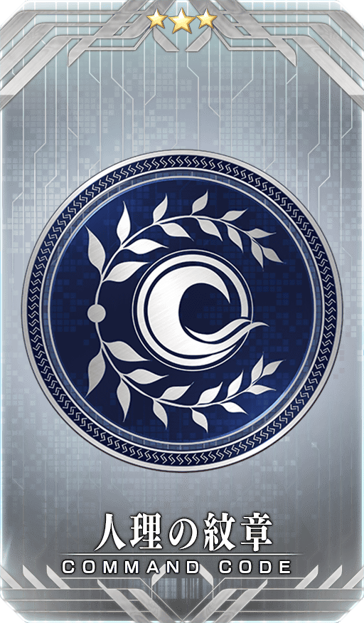
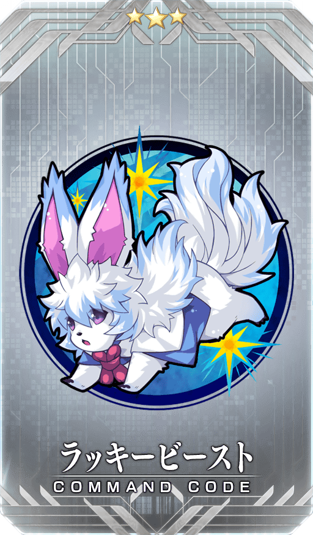
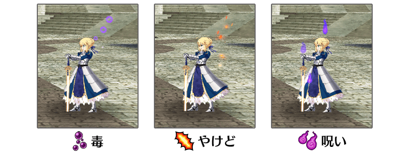
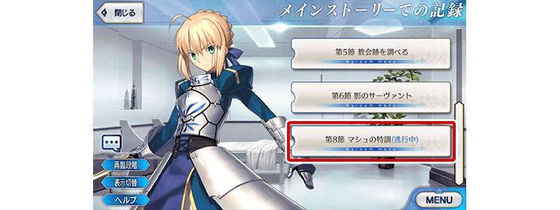
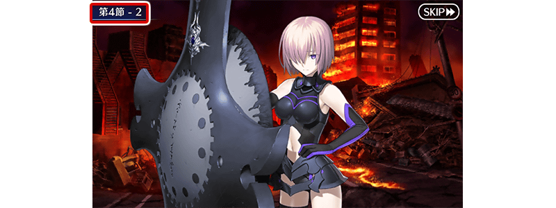

◆舉辦期間◆
2020年2月26日(三) 17:00(預定)～3月6日(五) 11:59
※本頁面皆為開發中圖片。會有與實際圖片相異的情況。

為了記念「1900萬DL突破宣傳活動」舉辦，實施特別連續登入獎勵。
在下述期間中，7天內連續登入的話，贈送睿智的猛火ALL★4(SR)10張、英靈結晶・星之芙芙ALL★3(HP)10張、英靈結晶・太陽之芙芙ALL★3(ATK)10張、呼符10張(聖晶石召喚最大11次份)等豪華報酬！
◆舉辦期間◆
2020年2月27日(四) 3:00(預定)～3月5日(四) 2:59
◆贈送對象◆
在2020年3月4日(三) 2:59通過「特異點F 炎上汙染都市 冬木」的御主對象
※上述時間前，在管理室(ターミナル)畫面的關卡橫幅必須要有「CLEAR」的文字顯示。
| 連續登入天數 | 贈送內容 | |
|---|---|---|
| 第1天 |

|
白銀果實 10個 |
| 第2天 |

|
睿智的猛火ALL★4(SR) 10張 |
| 第3天 |

|
黃金果實 10個 |
| 第4天 |

|
1,000萬QP |
| 第5天 |

|
英靈結晶・星之芙芙ALL★3(HP) 10張 |
| 第6天 |

|
英靈結晶・太陽之芙芙ALL★3(ATK) 10張 |
| 第7天 |

|
呼符 10張(聖晶石召喚最大11次份) |
※登入獎勵會在每天3:00配發。 ※連續登入天數中斷後，無法領取之後的禮物。 ※(聖晶石召喚最大11次份)限在同一個聖晶石召喚進行的情況。 ※最多能領取7次，但根據成為贈送對象的時間點，可能無法到此上限。

特別開放「Main Interlude 冥界的聖誕快樂」！
開放「Main Interlude 冥界的聖誕快樂」。
本次特別向滿足關卡開放條件的各位全員以期間限定開放！
特別開放期間結束後，在達文西工房的「稀有稜鏡交換」追加「Main Interlude 冥界的聖誕快樂」的關卡開放權，交換後變得可遊玩「Main Interlude 冥界的聖誕快樂」。
※在「稀有稜鏡交換」追加的「Main Interlude 冥界的聖誕快樂」的關卡開放權為永久，沒有交換期限。 ※在特別開放期間中通過「Main Interlude 冥界的聖誕快樂」的情況，無法在「稀有稜鏡交換」購入關卡開放權。
◆關卡開放條件◆
通過「第七特異點 絕對魔獸戰線 巴比倫尼亞」的御主對象
◆特別開放期間◆
2020年2月26日(三) 17:00(預定)～3月6日(五) 11:59
◆關卡的開放期間◆
享受主線關卡將以下表的時間表開放。
| 關卡的種類 | 開放期間 |
|---|---|
| 主線關卡第1節～第4節 | 2020年2月26日(三) 17:00(預定)～ 3月6日(五) 11:59 |
| 主線關卡第5節～ | 2020年2月28日(五) 17:00～ 3月6日(五) 11:59 |
◆有關「Main Interlude 冥界的聖誕快樂」的注意◆
※就算已經通過下述期間限定活動的情況也可遊玩。
・期間限定活動「冥界的聖誕快樂」
・期間限定活動「復刻:冥界的聖誕快樂 輕量版」
※故事與2017年舉辦時為同樣內容。
※無法獲得活動道具。
※可在通過關卡時獲得的戰利品及關卡通過報酬與過去舉辦活動的報酬不同。
※無法遊玩自由關卡、高難易度關卡等主線關卡以外的活動關卡。
※適用的支援編成為設定在「平常關卡」。
關於「Main Interlude 冥界的聖誕快樂」加入從者
「Main Interlude 冥界的聖誕快樂」中，藉由推進主線關卡讓「★4(SR)阿提拉・the・San〔誕〕」暫時加入。
「★4(SR)阿提拉・the・San〔誕〕」可藉由推進主線關卡至最後正式加入。
還有，在「★4(SR)阿提拉・the・San〔誕〕」的靈基再臨必須道具「聖誕老人鬍子」，可藉由推進主線關卡入手。
【2月26日(三) 17:00追記】
「Main Interlude 冥界的冥界的聖誕快樂」中暫時加入的「★4(SR)阿提拉・the・San〔誕〕」在特別開放期間結束的2020年3月6日(五) 11:59未能正式加入的情況，會暫時脫離。
暫時脫離後，日後交換在達文西工房「稀有稜鏡交換」追加的「Main Interlude 冥界的聖誕快樂」關卡開放權後，會繼承脫離前的強化狀態再次暫時加入。
※「阿提拉・the・San〔誕〕【寶具強化用】」預定日後在達文西工房的「稀有稜鏡交換」追加。關於交換1位必需2個稀有稜鏡。還有，在已經可強化「★4(SR)阿提拉・the・San〔誕〕」到寶具等級5狀況的情況，無法交換。 ※在通過「Main Interlude 冥界的聖誕快樂」時入手「累計第6位以後」「★4(SR)阿提拉・the・San〔誕〕」的話，贈送稀有稜鏡1個到禮物箱。 ※「★4(SR)阿提拉・the・San〔誕〕」暫時加入的情況，無法在期間限定活動「情人節2020 曾經美妙的情人節 ～紫式部與5人派對咖辣妹軍團～」交付入手的「鎖定巧克力」「驚喜巧克力」。
介紹「阿提拉・the・San〔誕〕」的寶具演出！
介紹「★4(SR)阿提拉・the・San〔誕〕」的寶具演出！
在「Fate/Grand Order」官方網站內的公告中，以影片公開寶具演出，敬請確認。
★4(SR)阿提拉・the・San〔誕〕強化時的獲得經驗值2倍！
下述的期間中，強化「★4(SR)阿提拉・the・San〔誕〕」時的獲得經驗值變成2倍。
◆舉辦期間◆
2020年2月26日(三) 17:00(預定)～3月6日(五) 11:59
「Main Interlude 冥界的聖誕快樂」關卡開放權與
「阿提拉・the・San〔誕〕【寶具強化用】」永久追加！
【3月6日(五) 12:00追記】
自2020年3月6日(五) 12:00，在達文西工房的「稀有稜鏡交換」永久追加「Main Interlude 冥界的聖誕快樂」的關卡開放權。
今後交換關卡開放權交換後就變得可遊玩「Main Interlude 冥界的聖誕快樂」。
並且，以通過「Main Interlude 冥界的聖誕快樂」的各位做為對象也永久追加「阿提拉・the・San〔誕〕【寶具強化用】」到達文西工房的「稀有稜鏡交換」。
◆能交換關卡開放權條件◆
通過「第七特異點 絕對魔獸戰線 巴比倫尼亞」的御主對象
◆能交換「阿提拉・the・San〔誕〕【寶具強化用】」條件◆
通過「Main Interlude 冥界的聖誕快樂」的御主對象
◆追加時間◆
2020年3月6日(五) 12:00～
◆追加道具(永久)◆
| 追加道具 | 能交換次數 | 1次交換所需的 稀有稜鏡數 |
|---|---|---|
| 「Main Interlude 冥界的聖誕快樂」關卡開放權 | 1次 | 5個 |
| 阿提拉・the・San〔誕〕【寶具強化用】 | 4次 | 2個 |
※在「稀有稜鏡交換」追加的「Main Interlude 冥界的聖誕快樂」關卡開放權及「阿提拉・the・San〔誕〕【寶具強化用】」為永久，沒有交換期限。 ※在特別開放期間中通過「Main Interlude 冥界的聖誕快樂」的情況，無法在「稀有稜鏡交換」購入關卡開放權。 ※特別開放期間中的「Main Interlude 冥界的聖誕快樂」推進至中途的情況，交換「Main Interlude 冥界的聖誕快樂」的關卡開放權的話，會繼承在特別開放期間中推進的關卡進行狀況。 ※特別開放期間中的「Main Interlude 冥界的聖誕快樂」中暫時加入的「★4(SR)阿提拉・the・San〔誕〕」會在2020年3月6日(五) 11:59未正式加入的情況暫時脫離，交換「Main Interlude 冥界的聖誕快樂」的關卡開放權後，會繼承脫離前的強化狀態再次暫時加入。 ※已經有可強化「★4(SR)阿提拉・the・San〔誕〕」至寶具等級5的情況，無法交換「阿提拉・the・San〔誕〕【寶具強化用】」。 ※就算於「稀有稜鏡交換」入手「累計第6位以後」「★4(SR)阿提拉・the・San〔誕〕」，也無法入手稀有稜鏡。
下述的期間中，在「御主任務」的「限定」標籤內以期間限定追加「【1900萬DL突破記念】任務」
通過所有任務的話，可得到最大350個魔力稜鏡與1個稀有稜鏡！
◆舉辦期間◆
2020年2月26日(三) 17:00(預定)～3月6日(五) 11:59
◆領取期間◆
2020年2月26日(三) 17:00(預定)～3月13日(五) 11:59
◆追加任務◆
| 任務名稱 | 任務達成報酬 | |
|---|---|---|
|
【1900萬DL突破記念】 擊倒20名『鬼魂』系的敵人 |
每通過各任務
 魔力稜鏡 50個
魔力稜鏡 50個
|
|
|
【1900萬DL突破記念】 擊倒20名持有『地』之力的敵人 |
||
|
【1900萬DL突破記念】 擊倒3位持有『神性』特性的從者 |
||
|
【1900萬DL突破記念】 擊倒3位持有『王』特性的從者 |
||
|
【1900萬DL突破記念】 靠戰利品收集4個『寶石』或『石』的道具 |
||
|
【1900萬DL突破記念】 通過3次『街』場景的自由關卡 |
||
|
【1900萬DL突破記念】 通過3次『地下』場景的自由關卡 |
||
|
【1900萬DL突破記念】 通過所有的任務 |

|
稀有稜鏡 1個 |
※請注意舉辦期間與領取期間有所差異。 ※請注意與每週日23:00更新的普通任務(Weekly)不同欄位，超過領取期間的話無法入手報酬。 ※就算達成「【1900萬DL突破記念】任務」，也不會計算在普通任務(Weekly)的任務進行度。 ※根據主線關卡的進行度會有無法達成「【1900萬DL突破記念】任務」的情況。
下述的期間中，在進行從者及概念禮裝的強化時，大成功(經驗值2倍加成)・極大成功(經驗值3倍加成)發生機率以期間限定變成2倍！
務必藉此機會強化中意的從者和概念禮裝吧！
◆舉辦期間◆
2020年2月26日(三) 17:00(預定)～3月6日(五) 11:59
下述的期間中，在進行從者及概念禮裝的強化時所需的QP消耗量以期間限定變成1/2！
配合大成功・極大成功發生率2倍，別錯過這超值的機會！
◆舉辦期間◆
2020年2月26日(三) 17:00(預定)～3月6日(五) 11:59
※請注意從者技能強化、靈基再臨(從者進化)、絆等級上限開放、指令紋章刻印、指令卡強化、從者寶具強化、聖杯轉臨、靈衣開放為對象外。

在迦勒底之門內每日出現的關卡「蒐集種火」的AP消耗量變成1/2！
◆舉辦期間◆
2020年2月26日(三) 17:00(預定)～3月6日(五) 11:59
◆對象關卡◆
蒐集種火<槍・殺篇>初級、中級、上級、超級
蒐集種火<劍・騎篇>初級、中級、上級、超級
蒐集種火<弓・術篇>初級、中級、上級、超級
蒐集種火<隨機篇>初級、中級、上級、超級
翻新「★4(SR)芬恩・麥克庫爾」的戰鬥動作及寶具演出！
在「Fate/Grand Order」官方網站內的公告中，以影片公開寶具演出，敬請確認。
◆翻新實施時間◆
2020年2月26日(三) 17:00～(預定)

向所有的御主對象，「指令紋章的持有欄位」以追加擴張50欄位擴張。
目前為止的150欄位擴張至持有欄位200欄位。
◆翻新實施時間◆
2020年2月26日(三) 17:00～(預定)
| 對象持有欄位 | 擴張數 |
|---|---|
| 指令紋章持有欄位 | 150→200(追加50欄位) |
為了記念「1900萬DL突破宣傳活動」舉辦，在達文西工房的「魔力稜鏡交換」，永久追加下述的指令紋章。
就算已經持有「★3(R)人理の紋章」「★3(R)ラッキービースト」的情況也可於「魔力稜鏡交換」獲得指令紋章。
◆追加時間◆
2020年2月26日(三) 17:00～(預定)
|  |
★★★R |
|  |
★★★R |
◆追加道具(永久)◆
| 追加道具 | 能交換次數 | 1次交換所需的 魔力稜鏡數 |
|---|---|---|
| ★3(R)人理の紋章 | 1次 | 300個 |
| ★3(R)ラッキービースト | 1次 | 300個 |
※追加到「魔力稜鏡交換」的「★3(R)人理の紋章」「★3(R)ラッキービースト」為永久，沒有交換期限。
為了記念「1900萬DL突破宣傳活動」舉辦，在達文西工房的「稀有稜鏡交換」，永久追加『魔力稜鏡交換「カルデア・ティータイム」開放權』。
由於『魔力稜鏡交換「カルデア・ティータイム」開放權』是在「魔力稜鏡交換」開放「★5(SSR)カルデア・ティータイム」的權利，關於實際交換1次需要魔力稜鏡1000個。
並且，本次指令紋章「★4(SR)勝利の兵装」也永久追加。
就算已經持有「★4(SR)勝利的兵装」的情況也可於「稀有稜鏡交換」獲得指令紋章。
◆追加時間◆
2020年2月26日(三) 17:00～(預定)
|
★★★★★SSR |

|
★★★★SR |
◆追加道具(永久)◆
| 追加道具 | 能交換次數 | 1次交換所需的 稀有稜鏡數 |
|---|---|---|
| 魔力稜鏡交換「カルデア・ティータイム」開放權 | 1次 | 1個 |
| ★4(SR)勝利の兵装 | 1次 | 2個 |
※追加到「稀有稜鏡交換」的『魔力稜鏡交換「カルデア・ティータイム」開放權』與指令紋章「★4(SR)勝利の兵装」為永久，沒有交換期限。 ※已經交換5張「★5(SSR)カルデア・ティータイム」的玩家，無法交換『魔力稜鏡交換「カルデア・ティータイム」開放權』。 ※關於已經交換1～4張「★5(SSR)カルデア・ティータイム」的玩家，只會開放未交換份。無論能交換張數不會改變必須的稀有稜鏡交換數(已經交換4張的情況只開放1張份)。
在2020年2月26日(三)的維修後反映的更新內容之中，介紹代表性的內容。
◆追加時間◆
2020年2月26日(三) 17:00～(預定)
關於一部份的狀態效果，修改成表示被賦予效果的演出會在戰鬥角色周圍顯示
為了變得更容易掌握戰鬥中的狀態效果，修改成表示「毒」「燒傷」「詛咒」效果的演出會在戰鬥角色周圍顯示。

主線劇情及幕間物語的文字冒險部份，修改成會根據進行度登錄到圖鑑(マテリアル)
目前為止，由數個進行度構成的主線劇情及幕間物語的關卡中，要通過關卡(通過所有的進行度)才會初次登錄劇情到圖鑑(マテリアル)，修改成就算沒通過關卡也會根據進行度過登錄劇情到圖鑑(マテリアル)。
因此，就算通過各關卡前，對應進行度的劇情變得可以在圖鑑(マテリアル)反覆閱讀。
※主線故事與幕間物語的關卡為對象。活動的關卡非對象。 ※進行度中途為止登錄的劇情會在看板以藍色文字(進行中)顯示。

圖鑑(マテリアル)中SKIP時，修改成會顯示移動處的進行度
圖鑑(マテリアル)中在文字冒險部份播放中進行SKIP的情況，變得會在畫面顯示左上SKIP處的劇情進行度。

【2月26日(三) 17:00追記】
其他還有，期間限定「1900萬DL記念Pick Up召喚」同時舉辦！
關於詳情，請自下述橫幅確認。
■「1900萬DL記念Pick Up召喚」詳細情報